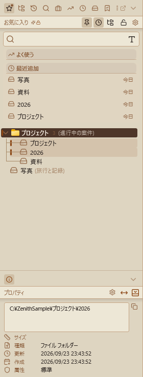
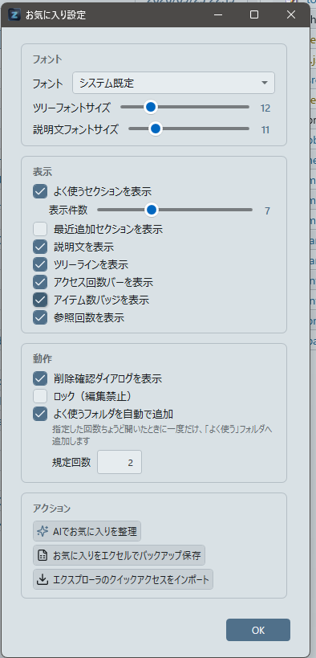
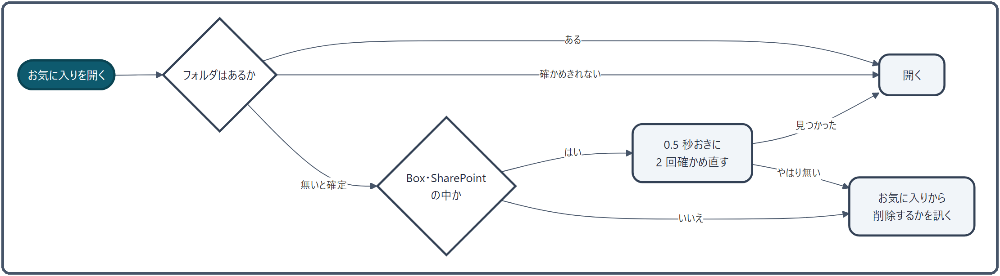

お気に入り管理¶
よく使うフォルダやファイルを、ナビペインのお気に入りビューに登録して、ひと押しで開けるようにします。仮想フォルダで分けて整理でき、登録先が消えたときの扱いや、別の PC・アカウントへの持ち運びもここで扱います。
できること¶
| したいこと | 操作 |
|---|---|
| 今のフォルダを登録する | アドレスバーの ★、または Ctrl + D |
| 今のフォルダが登録済みか見る | アドレスバーの ★ の中が塗られていれば登録済み |
| 選んだファイル・フォルダを登録する | 右クリック →「その他の操作 ▶」→「お気に入りに追加」、またはお気に入りビューへドラッグ |
| 開く | お気に入りをダブルクリック（中ボタンで新しいタブ） |
| 分けて整理する | 仮想フォルダを作り、ドラッグで入れる |
| 探す | お気に入りビューの検索欄に打つ |
| よく開くフォルダを自動で登録する | ⚙ →「よく使うフォルダを自動で追加」 |

お気に入りは、ナビペインのお気に入りビューに並びます。初めて起動したときは、デスクトップ・ダウンロード・ドキュメントが登録されています。
使い方¶
登録する¶
- アドレスバーの ★ ／
Ctrl + D: 今表示しているフォルダを登録します。名前と説明（任意）を入れるダイアログが出て、登録するとお気に入りビューに切り替わり、足した項目が少しのあいだ強調されます。フォルダが見つからないとき、すでに登録してあるときは登録しません。登録済みのフォルダを開いているあいだは ★ の中が塗られます（お気に入りビューで削除したときなど、どこから登録・解除してもすぐに追従します）。 - 右クリック: ファイル一覧で右クリック →「その他の操作 ▶」→「お気に入りに追加」で、右クリックしたファイル・フォルダを登録します（登録済みなら「お気に入りから解除」になります）。
- ドラッグ: ファイル一覧やエクスプローラーから、お気に入りビューへドラッグして落とすと、そのまま登録します（名前のダイアログは出ません）。
- このペインのタブを全てお気に入りに追加: タブを右クリックして選ぶと、そのペインのタブのフォルダを新しい仮想フォルダにまとめて登録します（→ タブ操作）。
- クイックアクセスから取り込む: ⚙ →「エクスプローラのクイックアクセスをインポート」で、エクスプローラーのクイックアクセスの項目を「インポート」という仮想フォルダへまとめて取り込みます。登録済みのものは飛ばし、新しく取り込むものが無ければ「インポート」フォルダも作りません。
- よく使うフォルダを自動で追加（既定はオフ）: ⚙ でオンにすると、フォルダを「規定回数」ちょうど開いたときに一度だけ、「よく使う」という仮想フォルダへ自動で登録します（規定回数は既定 20、最小 2）。説明には「〈回数〉 回参照したので自動で追加しました」と入ります。ちょうどの回数で一度だけなので、自動で入ったものを消しても、また入ってくることはありません。
整理する¶
- 仮想フォルダ: お気に入りビューの空いたところ、または項目を右クリック →「新しいフォルダ」で、いちばん下に仮想フォルダを作ります（名前は「新しいフォルダ」「新しいフォルダ (2)」…と自動で付きます）。項目を選んで
Insertを押すと、その項目のすぐ下に作ります。仮想フォルダは何段でも入れ子にできます。 - 並べ替え・入れる: 項目をドラッグして、行の上端・下端に落とすとその前後へ、仮想フォルダの上に落とすとその中へ移します。
- 説明: 右クリック →「概要を編集」で、「週次報告用」のような説明を付けられます。名前の横に控えめに出て、マウスを乗せるとパスと説明の全文が出ます。
- アイコン: 右クリックから、64 種類のアイコンを選んで付けられます（仮想フォルダにも、ふつうの項目にも）。
- カラータグ: 右クリックから 7 色のどれかを付けると、名前の左端の縦の線と、行全体の淡い色で分類できます。色はテーマの背景に合わせて読みやすく調整されます。
- 一番上の階層の仮想フォルダは、ナビペインの幅いっぱいの帯として描き、カテゴリの見出しのように見せます。その中の項目は、親子関係を示す細い線でつながります。
- 削除: 右クリック →「削除」か
Deleteで消します。⚙ の「削除確認ダイアログを表示」がオンなら確認します。中にお気に入りが入っている仮想フォルダは、この設定にかかわらず「「〈名前〉」と、その中のお気に入り 〈件数〉 件を削除しますか？」と確認します（中のお気に入りも一緒に消え、元に戻せないため）。 - すべて展開・すべて折りたたみ: お気に入りビューの空いたところを右クリックすると出ます。
- 今のフォルダに関係するお気に入りが光る: 操作中のペインで開いているフォルダと、同じ・親・子の関係にあるお気に入りに、左端のアクセントの線と淡い背景が付きます（
C:\work\projectAを開くと、その下のprojectA\docsが光る、など）。フォルダの移動・タブの切り替え・ペインの切り替えに付いていきます。
開く¶
- ダブルクリック（または
Enter）: フォルダは操作中のペインに開き、ファイルは関連付けられたアプリで開きます。仮想フォルダは開閉します。フォルダを指すショートカット（.lnk）は新しいタブで開きます。 - 中ボタンでクリック: 操作中のペインの新しいタブで開きます（ファイルは、そのファイルがあるフォルダを開きます）。
- 右クリック →「A ペインで開く」「B ペインで開く」: フォルダを指定したペインに開きます。
- ペインへドラッグ: ファイル一覧やタブバーに落としても開けます（→ ドラッグ＆ドロップ）。エクスプローラーやデスクトップに落とすと、ショートカットができます（お気に入りの元のフォルダは動きません）。
- キー:
F2で名前の変更、Deleteで削除、Insertで仮想フォルダ、Ctrl + Fで検索欄へ、Escでファイル一覧へ戻ります。
探す¶
お気に入りビューの上の検索欄に打つと、一覧を絞り込みます。
- 名前と説明（既定）か、フルパスと説明から探すかを、検索モードの切り替えで選べます。
- 大文字小文字は区別しません。4 文字以上打ったときは、1 文字（8 文字以上なら 2 文字）までの打ち間違いも拾います。
tag:に続けて色の英語名を打つと（tag:redなど）、そのカラータグの付いた項目だけにできます。
見え方を変える¶
お気に入りビューの見出しのボタンで切り替えます。
- よく使う: よく開く項目を、一覧の上に 3〜15 件（既定 5 件）並べます。開いた回数（6 割）と最近開いたか（30 日で 4 割）で順位を決めます。登録が 5 件以下のとき、ABC 順のとき、検索しているときは出ません。
- 最近追加: この 7 日に登録した項目を、新しい順に 5 件まで並べます。
- 並び替え（ツリー / ABC順）: 仮想フォルダの入れ子で見るか、仮想フォルダを外して名前順の 1 列で見るかを選びます。
- ロック: 下の「ロック」を見てください。
-
⚙（お気に入り設定）:

フォント・文字の大きさ、説明・ツリーの線・アクセス回数のバー・アイテム数のバッジ・参照回数を出すか、削除の確認を出すか、ロック、自動で追加、そして「AIでお気に入りを整理」「お気に入りをエクセルでバックアップ保存」「エクスプローラのクイックアクセスをインポート」をまとめています。
ロック¶
うっかり崩さないように、お気に入りの形を変える操作を止めます。
| ロック中にできないこと | ロック中もできること |
|---|---|
| 仮想フォルダを作る・削除する（ファイル一覧の「お気に入りから解除」も） | ★ ／ Ctrl + D ／ 右クリックでの登録 |
| ドラッグでの並べ替え・登録 | 名前・説明・アイコン・カラータグの変更 |
| 「このペインのタブを全てお気に入りに追加」・クイックアクセスの取り込み・自動での追加・AI での整理 | 見つからない項目を、訊かれたときに削除する |
ロック中は、止めている操作のメニューが押せなくなります。ドラッグで登録しようとしたときは、ステータスバーに理由が出て、南京錠が点滅して解除を促します。
AI で整理する¶
⚙ →「AIでお気に入りを整理」で開きます。まず総数・見つからない項目の数・仮想フォルダの数・どこにも入っていない項目の数を出し、次のどちらかを選べます。
- 見つからない項目だけを削除: AI は使いません。登録先が無くなった項目をまとめて消します。
- AI で整理: AI がお気に入りの形を読んで、見つからない項目の削除・関係する項目のまとめ・並べ替え・検索用のタグの付与を提案します。変わる内容を確かめてから当てはめます。「プロジェクト別にまとめて」のような指示も書けます。タグは説明の末尾に「AI: タグ1, タグ2」の形で足します。
無料版は 1 日 2 回までです。
Excel にバックアップする¶
⚙ →「お気に入りをエクセルでバックアップ保存」で、お気に入りを Excel ファイル（既定の名前は favorites_backup_日付.xlsx）に書き出します。列は No・グループ・表示名・フルパス・種類・開くリンクの 6 つで、グループは「親 > 子」の形で書きます。
しくみ¶
見つからないお気に入り¶

- 起動したとき: 裏でお気に入りをひととおり確かめ、見つからない項目は半透明にして、名前の右に ⚠ を付けます。見つかる項目には何も付きません。
- 開くとき: フォルダがあるかを確かめます。待つのは最大 2 秒（ネットワーク上のフォルダは 0.3 秒）で、確かめきれなかったときはそのまま開きます。応答の遅いネットワークで、確認待ちのせいで開けなくなるのを避けるためです。
- 無いと確定したときは「「〈名前〉」が見つかりません。お気に入りから削除しますか？」と訊きます。「はい」ならロック中でも削除します。Box・SharePoint・OneDrive（職場・学校）の中では、ファイルをその場で取り寄せる（オンデマンド）ぶんの遅れを見込んで、0.5 秒おきに 2 回確かめ直してから訊きます。
- 別の Windows アカウントの場所を指すお気に入りは、開けなくても削除を勧めません（下の「別の PC・アカウントへ持ち運ぶ」）。
保存と復旧¶
- お気に入りは
data\settings.jsonの中に保存します。変更が止まってから 0.8 秒後に書き出し、書き出しは「一時ファイルに書く → 元のファイルを控えに回す → 入れ替える」の順で行うので、書いている途中で落ちても壊れた状態にはなりません。 - 変更から約 5 分後には、
backupsフォルダへsettings_日時.jsonの形で世代の控えも作ります。設定 → リカバリ から、任意の時点に戻せます（→ バックアップとリカバリ）。 settings.jsonが読めないときは、控え（.bak）→ いちばん新しい世代の控え → 既定の順に読み直します。読めなかったファイルは.corrupt-日時の名前で残します。- ドラッグでの並べ替えは、すぐに書き出します。書き出せなかったときは、並べ替える前の状態に戻します。
別の PC・アカウントへ持ち運ぶ¶
同じ ZenithFiler のフォルダを別の Windows アカウントや PC で使うときのために、Box・OneDrive・SharePoint の同期フォルダの中のお気に入りは、アカウントに依らない形で保存します。
- 保存するとき、
C:\Users\<名前>\Box\…のような場所を、%USERPROFILE%・%OneDrive%・%OneDriveCommercial%からの相対の形に置き換えます（長く一致するものから）。 - 読み込むとき、使っているアカウントの同じ場所へ戻します。
- デスクトップやドキュメントのように、アカウントごとに中身が別の場所は置き換えません。そのままの場所を指します。
関連¶
- ナビペイン — お気に入りビューのほか、ツリー・参照履歴
- アドレスバーとパンくず — ★ でお気に入りに追加する
- ドラッグ＆ドロップ — お気に入りをペインやエクスプローラーへ落とす
- ワーキングセット — タブの組み合わせを保存する
- バックアップとリカバリ — 設定を前の状態に戻す